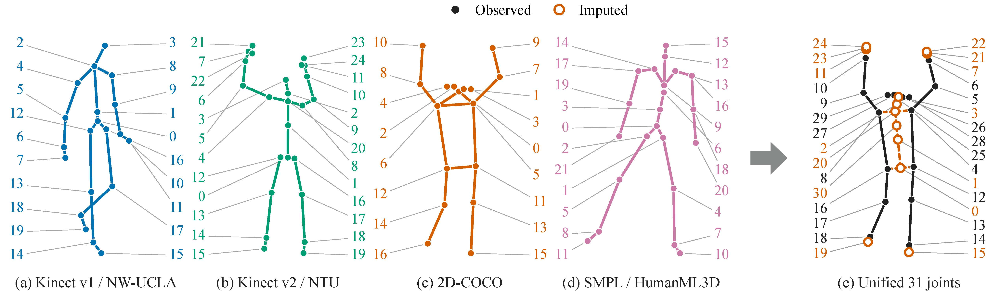
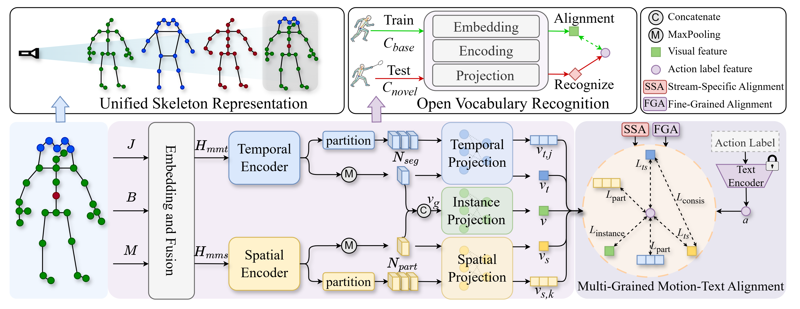

arXiv 2026
Toward Universal Skeleton-Based Action Recognition
across Heterogeneous Skeletons and Open Vocabularies
Southeast University · University of Macau · UOW College Hong Kong · HKUST
A single model canonicalizes four heterogeneous skeleton formats, aligns motion with language at multiple granularities, and recognizes actions from an open candidate vocabulary.
Abstract
Skeleton data used for action recognition come from depth sensors, marker-based motion capture systems, and 2D or 3D pose estimators. Their joint counts, skeletal topologies, and coordinate dimensions differ, while real applications must also recognize action categories beyond a fixed training vocabulary. We study universal skeleton-based action recognition under these two challenges. We construct the Heterogeneous Open-Vocabulary (HOV) Skeleton dataset and introduce a Transformer framework that maps Kinect v1, Kinect v2, COCO-17, and SMPL-22 inputs into a common representation. A two-stream motion encoder learns temporal and spatial features, while multi-grained motion-text alignment connects global instances, individual streams, temporal segments, and body parts to language semantics. The resulting model handles heterogeneous skeleton sources and open candidate label sets with one set of weights.
Unified Skeleton Representation
ptarget = panchor + rho(panchor - pparent)

Framework
Joint, bone, and motion streams share a two-stream Transformer encoder. Global, stream-specific, temporal, and body-part features are aligned with frozen text embeddings.

Results
The same unified model is evaluated on Kinect v2 3D skeletons, COCO-based 2D poses, and SMPL motion-capture sequences.
One checkpoint, three benchmarks
Heterogeneous recognition
Top-1 accuracy (%) from Table II, full J+B+M model.
Linear probing across sensor types
Cross-format generalization
Train on one format, test on another.
| Pre-training source | Target | Format shift | Accuracy |
|---|---|---|---|
| NTU-60 3D | HumanML3D | Kinect v2 → MoCap | 52.72 |
| NTU-60 3D | NTU-60 2D | Kinect v2 → 2D pose | 75.41 |
| NTU-60 3D | NW-UCLA | Kinect v2 → Kinect v1 | 91.59 |
| HumanML3D | NTU-60 3D | MoCap → Kinect v2 | 74.81 |
| HumanML3D | NTU-60 2D | MoCap → 2D pose | 74.91 |
| HumanML3D | NW-UCLA | MoCap → Kinect v1 | 86.85 |
BibTeX
If you find this work useful, please cite our paper.
@misc{kuang2026universalskeletonbasedactionrecognition,
title = {Toward Universal Skeleton-Based Action Recognition across Heterogeneous Skeletons and Open Vocabularies},
author = {Jidong Kuang and Hongsong Wang and Jie Gui and Yuan Yan Tang and James Tin-Yau Kwok},
year = {2026},
eprint = {2604.17013},
archivePrefix = {arXiv},
primaryClass = {cs.CV},
url = {https://arxiv.org/abs/2604.17013}
}